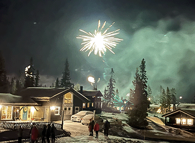
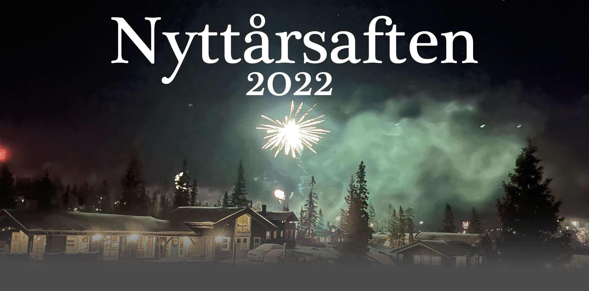

Nyttårsaften 2022
 Reiseplan
Hytten er på Sjusjøen og vi kommer til å reise dit på forskjellige måter. Oscar reiser fra Beitostølen, mens Henrik, Erlend og Petter tar toget til Lillehammer der de blir plukket opp av en av mine foreldre. Jeg er på hytta fra før, så dere møter meg her.
Reiseplan med tog:
| Avreise Lysaker 29/12: | 12:21 |
| Framme på Lillehammer: | 14:42 |
Pakkeliste
På hytta skal vi stå på ski og se på fyrverkeri. Dessuten må vi gå på ski for å ta bussen hjem, så det er viktig at dere pakker i sekk eller en bag dere kan ta på ryggen. Her er pakkelisten:
- Ski
- Skitøy
- Utebukse
- Boblejakke
- Vindjakke
- Varme klær
- Ullundertøy
- Innetøy
- Tøfler?
- Dagstursekk
2023 Countdown
Time
Dager
Time
Timer
Time
Minutter
Time
Sekunder
Hjemreise
For å komme oss hjem igjen må vi gå litt på ski, så ta bussen til Lillehammer, og så toget derfra til Lysaker stasjon.
| Avreise mandag 01/01: | Ca. klokken 14:30 |
| Framme på Lysaker: | Klokken 18:38 |
Vi drar fra hytta ca. 14:30 for å rekke bussen som går fra Sjusjøen Sentrum 15:07. Denne tar vi ned til Lillehammer Stasjon, hvor vi må vente en halv time på toget som tar oss til Lysaker Stasjon.